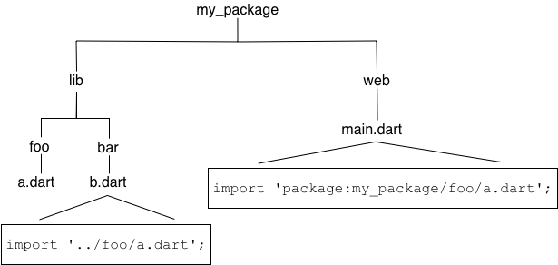

Creating packages
The Dart ecosystem uses packages to share software such as libraries and tools. This page tells you how to create a standard shared package.
Creating a new package
#To create the initial directory and structure for a package, use the dart create command and the package template:
$ dart create -t package <PACKAGE_NAME>What makes a package
#The following diagram shows the simplest layout of a package:

The minimal requirements for a library are:
- pubspec file
- The
pubspec.yamlfile for a library is the same as for an application package—there is no special designation to indicate that the package is a library. - lib directory
- As you might expect, the library code lives under the lib directory and is public to other packages. You can create any hierarchy under lib, as needed. By convention, implementation code is placed under lib/src. Code under lib/src is considered private; other packages should never need to import
src/.... To make APIs under lib/src public, you can export lib/src files from a file that's directly under lib.
Organizing a package
#Packages are easiest to maintain, extend, and test when you create small, individual libraries, referred to as mini libraries. In most cases, each class should be in its own mini library, unless you have a situation where two classes are tightly coupled.
Create a "main" library file directly under lib, lib/<package-name>.dart, that exports all of the public APIs. This allows the user to get all of a library's functionality by importing a single file.
The lib directory might also include other importable, non-src, libraries. For example, perhaps your main library works across platforms, but you create separate libraries that rely on dart:io or dart:js_interop. Some packages have separate libraries that are meant to be imported with a prefix, when the main library is not.
Let's look at the organization of a real-world package: shelf. The shelf package provides an easy way to create web servers using Dart, and is laid out in a structure that is commonly used for Dart packages:

Directly under lib, the main library file, shelf.dart, exports API from several files in lib/src. To avoid exposing more API than intended—and to give developers an overview of the entire public API of the package—shelf.dart uses show to specify exactly which symbols to export:
export 'src/cascade.dart' show Cascade;
export 'src/handler.dart' show Handler;
export 'src/hijack_exception.dart' show HijackException;
export 'src/middleware.dart' show Middleware, createMiddleware;
export 'src/middleware/add_chunked_encoding.dart' show addChunkedEncoding;
export 'src/middleware/logger.dart' show logRequests;
export 'src/middleware_extensions.dart' show MiddlewareExtensions;
export 'src/pipeline.dart' show Pipeline;
export 'src/request.dart' show Request;
export 'src/response.dart' show Response;
export 'src/server.dart' show Server;
export 'src/server_handler.dart' show ServerHandler;The shelf package also contains a mini library: shelf_io. This adapter handles HttpRequest objects from dart:io.
Importing library files
#When importing a library file from another package, use the package: directive to specify the URI of that file.
import 'package:utilities/utilities.dart';When importing a library file from your own package, use a relative path when both files are inside of lib, or when both files are outside of lib. Use package: when the imported file is in lib and the importer is outside.
The following graphic shows how to import lib/foo/a.dart from both lib and web.

Conditionally importing and exporting library files
#If your library supports multiple platforms, then you might need to conditionally import or export library files. A common use case is a library that supports both web and native platforms.
To conditionally import or export, you need to check for the presence of dart:* libraries. Here's an example of conditional export code that checks for the presence of dart:io and dart:js_interop:
export 'src/hw_none.dart' // Stub implementation
if (dart.library.io) 'src/hw_io.dart' // dart:io implementation
if (dart.library.js_interop) 'src/hw_web.dart'; // package:web implementationHere's what that code does:
- In an app that can use
dart:io(for example, a command-line app), exportsrc/hw_io.dart. - In an app that can use
dart:js_interop(a web app), exportsrc/hw_web.dart. - Otherwise, export
src/hw_none.dart.
To conditionally import a file, use the same code as above, but change export to import.
All of the conditionally exported libraries must implement the same API. For example, here's the dart:io implementation:
import 'dart:io';
void alarm([String? text]) {
stderr.writeln(text ?? message);
}
String get message => 'Hello World from the VM!';And here's the default implementation, which uses stubs that throw UnsupportedError:
void alarm([String? text]) => throw UnsupportedError('hw_none alarm');
String get message => throw UnsupportedError('hw_none message');On any platform, you can import the library that has the conditional export code:
import 'package:hw_mp/hw_mp.dart';
void main() {
print(message);
}Providing additional files
#A well-designed package is easy to test. We recommend that you write tests using the test package, placing the test code in the test directory at the top of the package.
If you create any command-line tools intended for public consumption, place those in the bin directory, which is public. Enable running a tool from the command line, using dart pub global activate. Listing the tool in the executables section of the pubspec allows a user to run it directly without calling dart pub global run.
It's helpful if you include an example of how to use your library. This goes into the example directory at the top of the package.
Any tools or executables that you create during development that aren't for public use go into the tool directory.
Other files that are required if you publish your library to the pub.dev site, such as README.md and CHANGELOG.md, are described in Publishing a package. For more information on how to organize a package directory, see the pub package layout conventions.
Documenting a library
#You can generate API docs for your library using the dart doc tool. dart doc parses the source looking for documentation comments, which use the /// syntax:
/// The event handler responsible for updating the badge in the UI.
void updateBadge() {
...
}For an example of generated docs, see the shelf documentation.
To include any library-level documentation in the generated docs, add a library directive and attach the comment directly above it. For the how-and-why of documenting libraries, see Effective Dart: Documentation.
Distributing an open source library
#If your library is open source, we recommend sharing it on the pub.dev site. To publish or update the library, use pub publish, which uploads your package and creates or updates its page. For example, see the page for the shelf package. See Publishing a package for details on how to prepare your package for publishing.
The pub.dev site not only hosts your package, but also generates and hosts your package's API reference docs. A link to the latest generated docs is in the package's About box; for example, see the shelf package's API docs. Links to previous versions' docs are in the Versions tab of the package's page.
To ensure that your package's API docs look good on the pub.dev site, follow these steps:
- Before publishing your package, run the
dart doctool to make sure that your docs generate successfully and look as expected. - After publishing your package, check the Versions tab to make sure that the docs generated successfully.
- If the docs didn't generate at all, click failed in the Versions tab to see the
dart docoutput.
Resources
#Use the following resources to learn more about packages:
- Libraries and imports covers using library files.
- The package documentation is useful, particularly the package layout conventions.
- What not to commit covers what shouldn't be checked into a source code repository.
- The newer packages under the dart-lang organization tend to show best practices. Consider studying these examples: dart_style, path, shelf, source_gen, and test.
Unless stated otherwise, the documentation on this site reflects Dart 3.6.0. Page last updated on 2024-12-10. View source or report an issue.